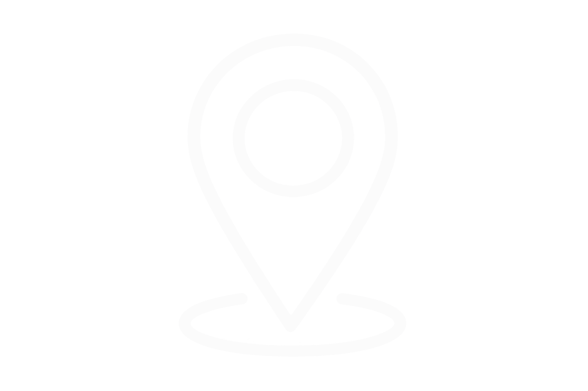
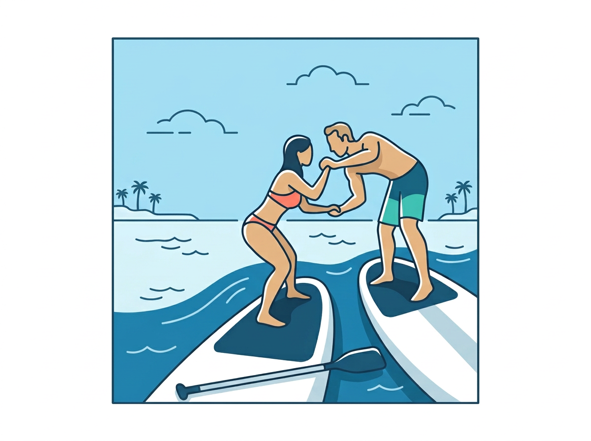
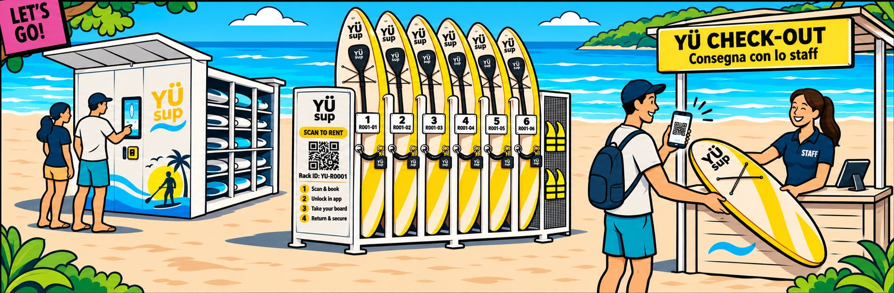
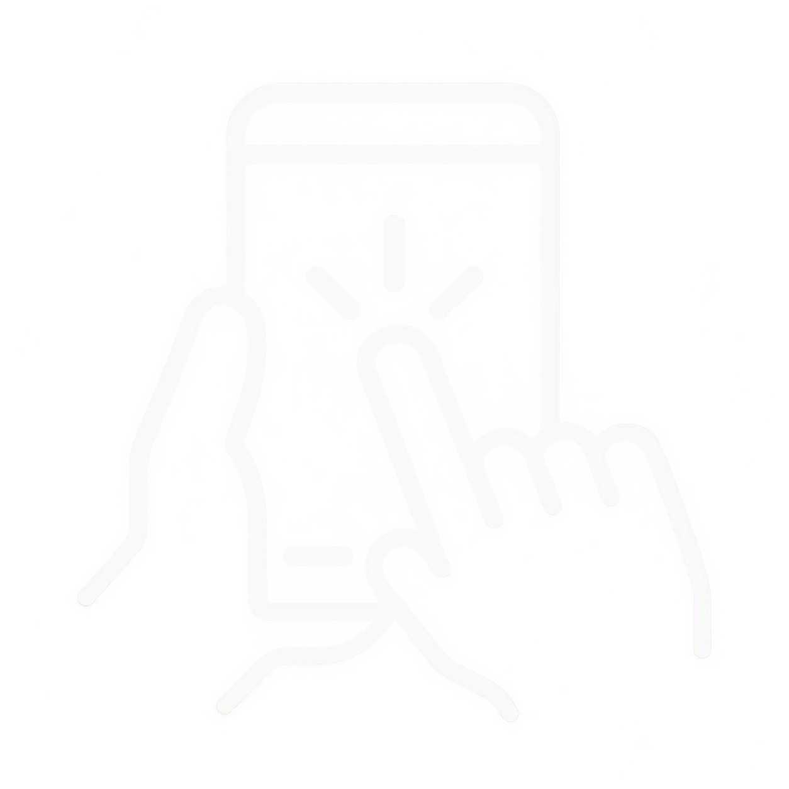
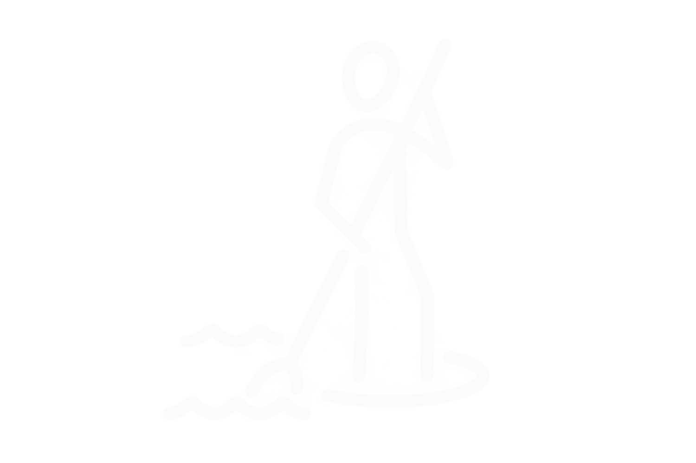

FIND IT.
Head to the YÜ station at the beach and get ready.

Arrive by the sea. Feel like a paddle.
No equipment to carry. No planning ahead.
That’s the idea behind YÜ.
A break from the everyday. A paddle with your people. That moment when you think: let’s just go.
YÜ makes SUP rental simple and self-service. Find a station, use your phone and get ready to enjoy the water.
HERE’S HOW →
Three simple steps.
More time for the good part.

Head to the YÜ station at the beach and get ready.

Open the YÜ app. Follow the steps on your phone to book, pay and unlock your SUP.

Grab your board and accessories. Enjoy the ride.
Download the YÜ app to find the stations near you, check availability and reserve a board, or start with your SUP straight away.
Coming to iPhone and Android in summer 2027.
Paddling is easy. Coming back safe is the best part. Read these before you head out, even if you’ve done it a hundred times.
Paddle along the beach, within easy swimming distance, and keep clear of boat lanes, swimming zones and buoys.
Wear the life jacket from your kit, fastened and right for your weight. If your board has an ankle leash, keep it attached.
Go with a friend, or tell someone where you’re going and when you’ll be back. Keep your phone in the dry bag.
Look at the forecast and station notices. Skip strong wind, big waves and storms, and take extra care with offshore wind: it pushes you out to sea.
Never paddle after alcohol or drugs. Be back on the beach before dark and before your return time.
You must be 18+ and able to swim. Practise falling off and climbing back on near the shore. You paddle at your own risk.
The same answers you’ll find in the app. Can’t see yours? Just ask.
HELLO@YUSUP.CO.UK →